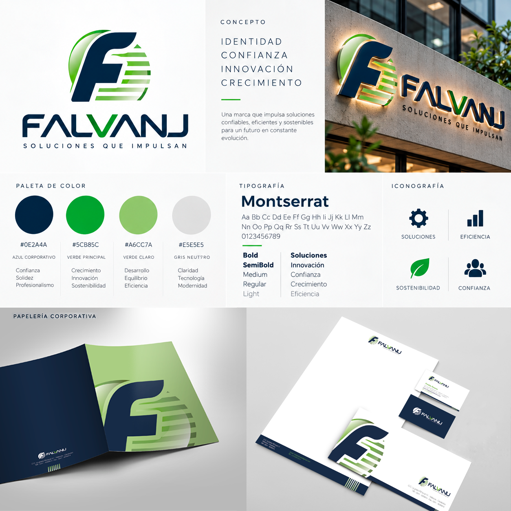
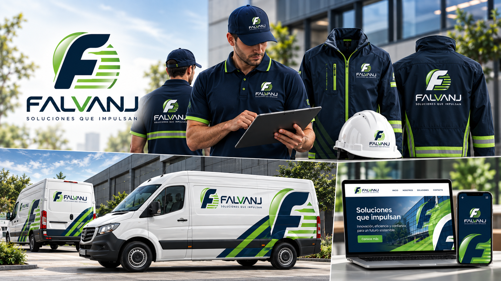

01 — Identidad de marcaLogotipo, concepto, paleta cromática, tipografía, iconografía y papelería corporativa reunidos en un sistema visual coherente.
Concepto de marca
Una identidad diseñada para comunicar solidez, crecimiento e innovación a través de un lenguaje corporativo claro y reconocible.

02 — AplicacionesDesarrollo de la identidad en uniformes, indumentaria técnica, flota corporativa y entornos digitales.